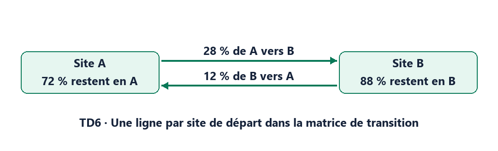

Comprendre le cours
1. Lire et multiplier des matrices
Une matrice de taille m×n contient m lignes et n colonnes. aᵢⱼ désigne la valeur de la ligne i et de la colonne j. La transposée échange les lignes et les colonnes. Dans une matrice triangulaire supérieure, les termes strictement sous la diagonale sont nuls.
Deux matrices de même taille s’additionnent case par case. Pour multiplier A de taille m×n par B de taille n×p, prends une ligne de A, une colonne de B, multiplie les termes correspondants et additionne. Le résultat a taille m×p. L’ordre des facteurs change le calcul et peut aussi rendre l’autre produit impossible.
2. Résoudre un système avec un pivot
Écris chaque équation sur une ligne, dans le même ordre de variables. Mets la partie droite après une barre. Tu peux échanger des lignes, multiplier une ligne par un coefficient non nul ou ajouter un multiple d’une autre ligne. Ces opérations donnent un système équivalent.
Choisis un pivot non nul, puis annule les termes sous ce pivot. Passe à la colonne suivante sur les lignes restantes. Une ligne 0=5 rend le système impossible. Si une variable est libre, exprime les variables liées à partir d’elle. En fin de calcul, remplace les valeurs dans les équations initiales.
Le déterminant détecte l’inversibilité d’une matrice carrée. Pour [[a,b],[c,d]], il vaut ad−bc. En dimension 3, développer par une ligne riche en zéros peut accélérer le calcul. Pour calculer l’inverse par Gauss-Jordan, transforme [A | I] en [I | A⁻¹] en appliquant les mêmes opérations aux deux blocs.
3. Passer d’un graphe à des chemins
Un graphe relie des sommets. Une arête non orientée se parcourt dans les deux sens et un arc orienté indique un sens. La matrice d’adjacence note les liaisons entre paires de sommets dans un ordre fixé. Pour une matrice d’adjacence numérique d’un graphe simple, l’entrée (i,j) de sa puissance k compte les parcours de longueur k de i à j, avec les répétitions permises.
Avec des poids tous non négatifs, Dijkstra fige le sommet de distance provisoire minimale et essaie d’améliorer les distances vers ses voisins. Garde aussi les prédécesseurs pour reconstruire le chemin. Bellman-Ford répète l’amélioration des arcs et permet des poids négatifs. Un cycle négatif atteignable peut rendre certaines distances sans minimum fini.
4. Calculer l’évolution d’une chaîne de Markov
Une chaîne de Markov décrit une évolution par étapes. Les probabilités du prochain état dépendent de l’état courant dans le modèle. Avec une distribution écrite en ligne Pₙ, mets dans la ligne i de la matrice les probabilités de départ de l’état i. On applique Pₙ₊₁=PₙT.

Une distribution stationnaire respecte PT=P et ses composantes somment à 1. Cela signifie que la répartition ne change plus si on démarre avec cette distribution. Pour démontrer que la répartition du sujet converge, on peut en plus trouver une récurrence et suivre l’écart à cet état.
Comment retrouver une erreur de signe après un pivot ?
Dans le système du TD, les deux lignes réduites donnent −y+z = 1 et −2y+z = −1. Soustraire la première à la seconde élimine z : −y = −2, donc y = 2. Remonter donne z = 3 puis x = −1.
Vérifie le triplet dans les trois lignes d’origine : −1+2+3 = 4, −2+2+9 = 9 et −1−2+6 = 3. Un test uniquement sur les lignes transformées pourrait laisser passer une erreur commise lors de la transformation elle-même.
Du cours aux TD et TP
Questions TD & TP
TD2, ex. 3 · Résoudre le premier système par Gauss
Énoncé. Résoudre par pivot de Gauss le système dont les lignes sont données ci-dessous.
x + y + z = 4
2x + y + 3z = 9
x − y + 2z = 3- Garde la première ligne. Fais
L₂−2L₁etL₃−L₁. Les deux dernières équations deviennent−y+z=1et−2y+z=−1. - Soustrais la deuxième équation réduite de la troisième. Tu obtiens
−y=−2, doncy=2. Remonte ensuite àz=3etx=−1. - Le contrôle dans la deuxième ligne donne
−2+2+9=9. Vérifie aussi les deux autres lignes.
TD3, ex. 3 · Pour quelles valeurs la matrice est-elle inversible ?
Énoncé. Calculer le déterminant de la matrice [[1,0,a],[0,a,1],[a,1,0]] et déterminer les paramètres qui permettent l’inversion.
- Développe selon la première ligne avec les signes
+ − +. Le terme du milieu s’annule. - Le mineur du 1 vaut
a×0−1×1=−1. Le mineur de la troisième colonne vaut0×1−a×a=−a². Donc le déterminant vaut−1−a³. - Sur les réels, il s’annule pour
a=−1seulement. À cette valeur, chaque ligne somme à zéro. La matrice envoie donc le vecteur non nul(1,1,1)sur zéro et ne peut pas avoir d’inverse.
TD5, ex. 9 · Organiser les étapes de Dijkstra et Bellman-Ford
Énoncé. Sur les graphes dessinés dans le TD, chercher un plus court chemin de S à T avec les méthodes demandées.
- Tabule une distance et un prédécesseur par sommet. Initialise S à zéro et les autres à l’infini.
- Si les poids sont non négatifs, fige la plus petite distance provisoire. Pour chaque voisin, compare sa valeur actuelle à la distance figée plus le poids de l’arc. Modifie distance et prédécesseur si elle baisse.
- Pour Bellman-Ford, refais ce test sur tous les arcs jusqu’à stabilisation ou après
n−1tours pournsommets. Un tour supplémentaire qui améliore une distance signale un cycle négatif atteignable. S’il peut mener à T, on peut réduire le coût d’un trajet vers T sans limite.
TD6, ex. 2 · Prédire la répartition des données entre A et B
Énoncé. A transfère chaque mois 28 % de ses données vers B, B en transfère 12 % vers A, et le stock initial est réparti à 60 % en A. Calculer deux mois et déterminer l’état stable.
- La ligne de A contient
(0,72 ; 0,28). Celle de B contient(0,12 ; 0,88). Les deux lignes somment à 1. - Partant de
(0,6 ; 0,4), la nouvelle part de A vaut0,6×0,72+0,4×0,12=0,48. Après deux mois on obtient(0,408 ; 0,592). - Avec
b=1−a, la relation devientaₙ₊₁=0,60aₙ+0,12. L’état fixe de A vaut 0,30. L’écart à 0,30 est multiplié par 0,60 chaque mois, donc la limite est(0,30 ; 0,70). B dépasse deux tiers pour la première fois au cinquième mois.